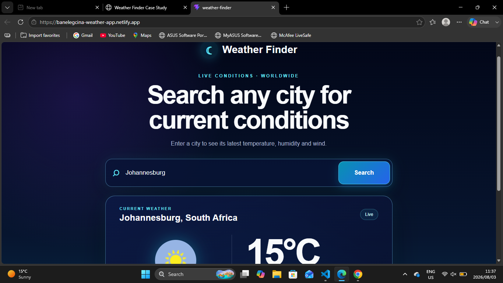

📌 Project Overview
Weather Finder is a responsive React application that allows users to search for a city and view its current weather information. It retrieves live data from the Weatherstack API and presents it in a simple, user-friendly interface with clear loading and error states.
🎯 Problem Statement
Users need a quick way to find current weather information for a city. The challenge was to connect a React interface to an external API, manage asynchronous requests, and give users useful feedback while data was loading or when a search could not be completed.
🧠 My Role
I worked as the frontend developer responsible for building the React interface, integrating the Weatherstack API, separating the API logic into a reusable custom hook, handling application states, and deploying the completed project to Netlify.
⚙️ Process
- Created the project using React and Vite
- Designed a responsive city-search interface
- Connected the application to the Weatherstack API
- Moved the request and state logic into a custom useWeather hook
- Added loading, error, empty-input, and successful-result states
- Configured the API key using environment variables
- Deployed and tested the application on Netlify
🖼️ UI Preview

💻 Implementation
The application uses React state to display the weather result, loading status, and error messages. All request logic lives inside the reusable useWeather custom hook. The hook builds the Weatherstack request, fetches current weather data, validates the response, and then updates the interface. The API key is loaded from a Vite environment variable and is not committed to the GitHub repository.
🧪 Challenges
One of the main challenges was handling the API key correctly in both local development and the deployed Netlify application. I solved this by using a local environment file during development and configuring the same variable in Netlify. I also improved the user experience by showing clear messages for empty searches, failed requests, and missing weather results instead of leaving the page blank.
🚀 Outcome
The final result is a deployed weather-search application that retrieves current data for user-selected cities. The project demonstrates my ability to work with React, asynchronous API calls, custom hooks, environment variables, conditional rendering, error handling, and frontend deployment.
📚 Key Learnings
- Fetching and displaying live data from a third-party API
- Managing loading, error, and successful-result states in React
- Separating API logic into a reusable custom hook
- Using environment variables in Vite and Netlify
- Debugging differences between local and deployed environments
- Building a responsive interface with clear user feedback